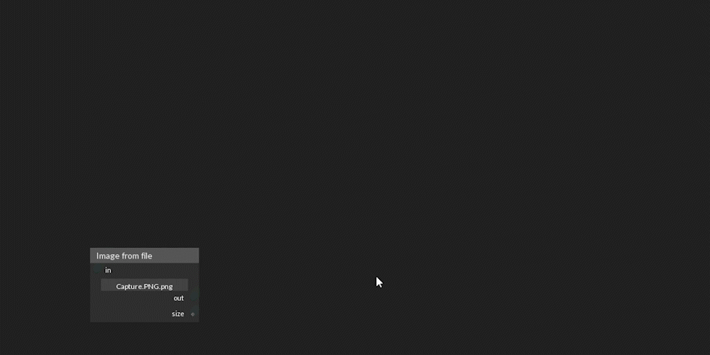
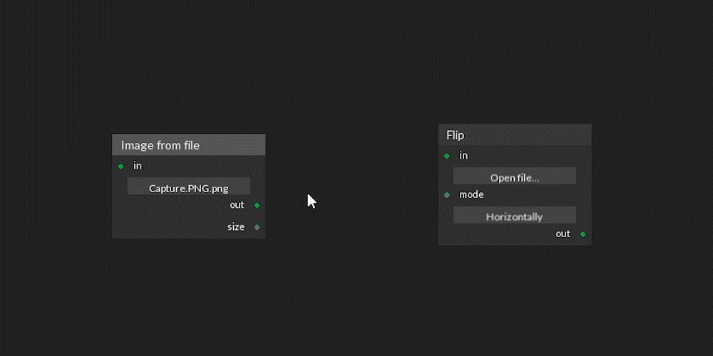
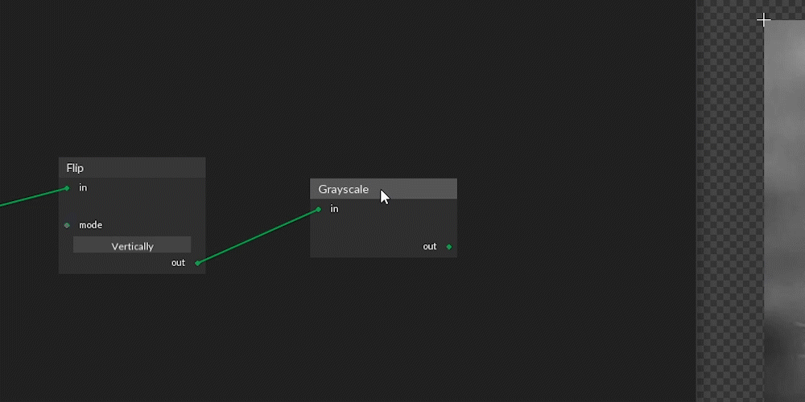
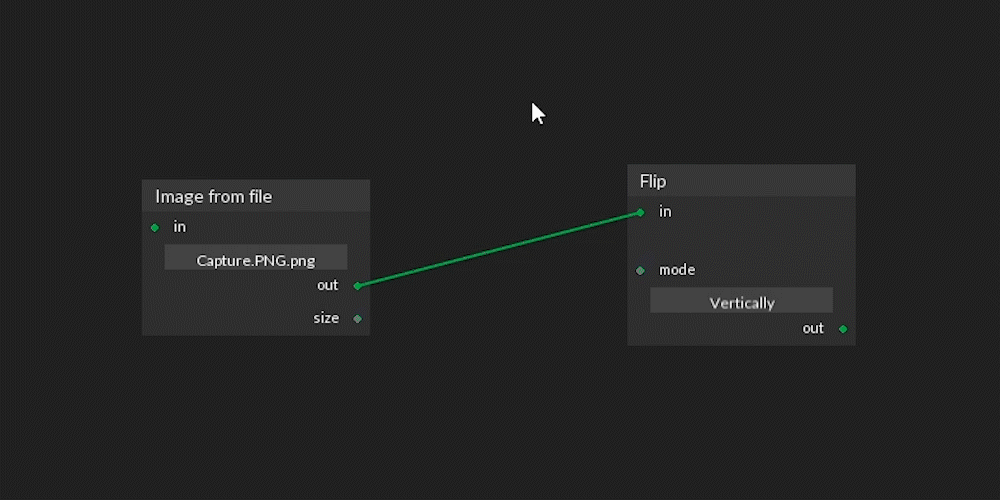
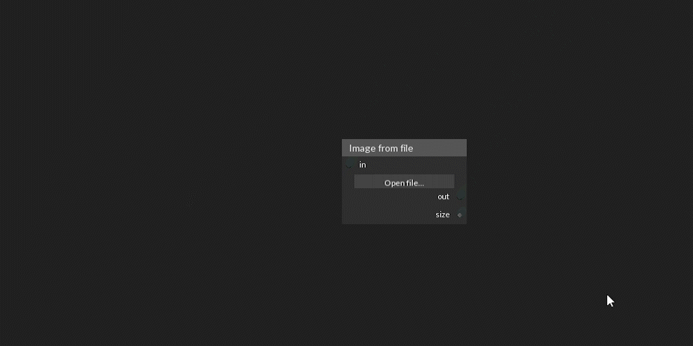
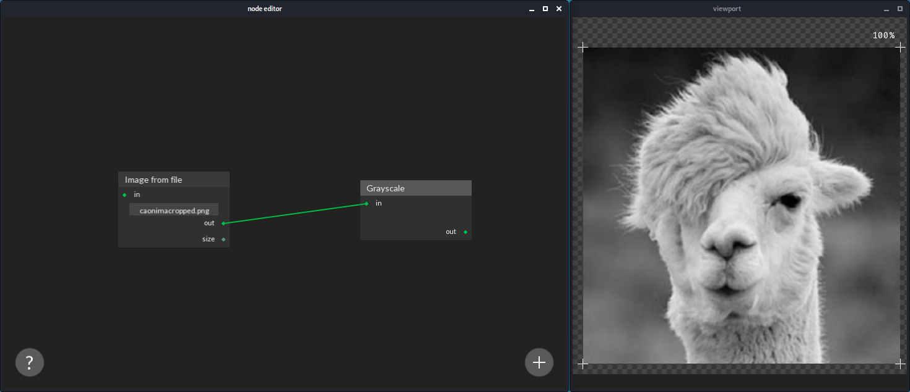
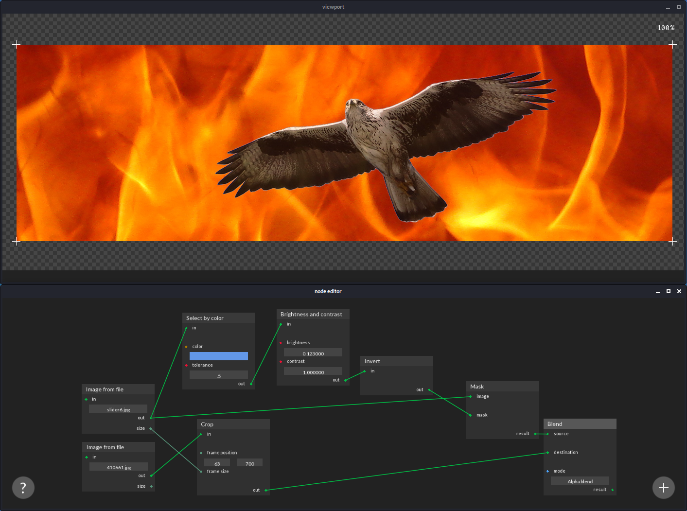

Noose help
Application usage
-
Add nodes by using the add button.
-
Load an image file into a node’s input by clicking on open file.

-
Use the spacebar to find a node by typing its name. Press enter to create the selected node.
 -
Connect nodes by dragging with the left mouse button.
 -
Right click on a node's top bar to select it and see its outputs.

-
Pan the view by dragging with the middle mouse button.

-
Right click on the image to save it.

-
You can change a node's input value if the slot is not connected. Numeric values are modified by dragging across the horizontal axis.


-
Use the backspace or delete key to remove a node while selected.
 -
Remove connections by dragging with the right mouse button.
 -
Use the left mouse button to move nodes around by dragging their top bars.
 -
Use the right mouse button to enter numeric values using the keyboard. Press the enter key after introducing the value.

Basic examples
Convert an image to grayscale

Replace the background of an image using color selection:
